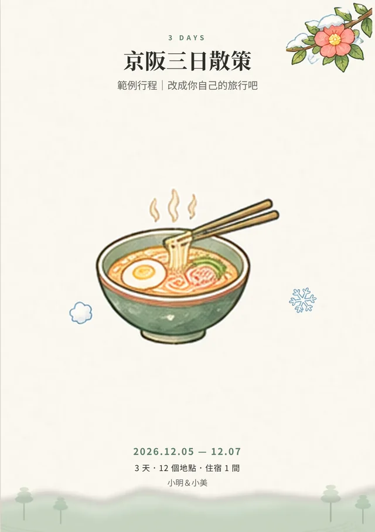
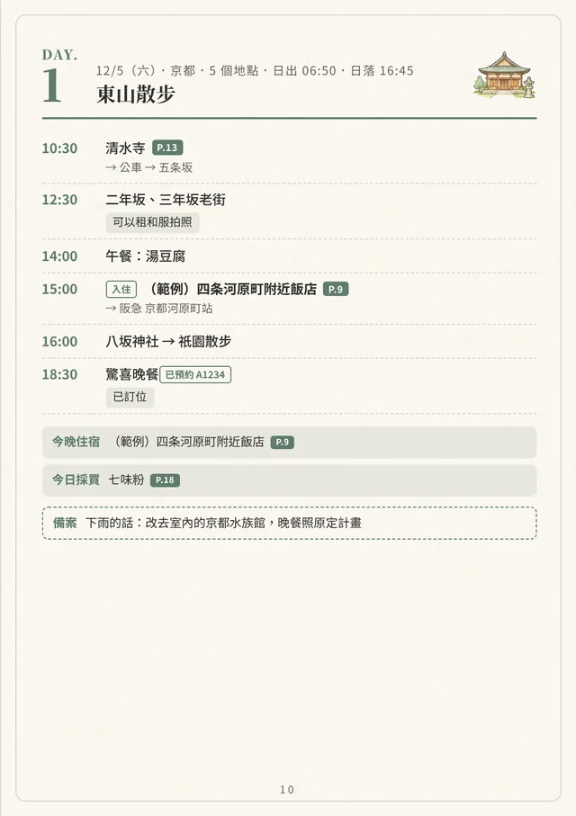
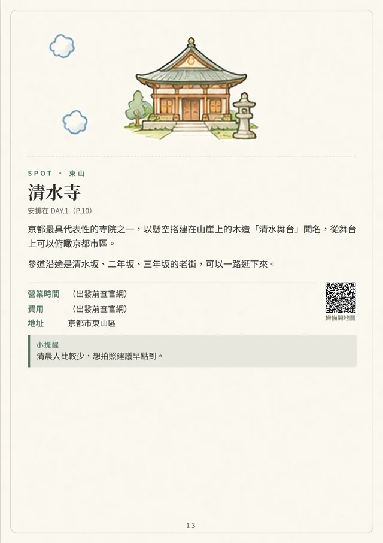
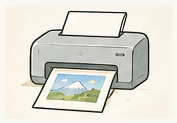
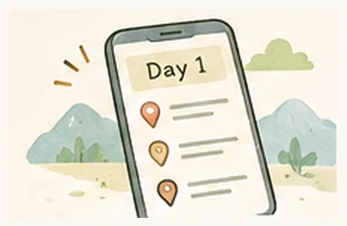

規劃行程
每天一頁，景點、交通、住宿入住退房自動排好；還會提醒公休、太早出門、還沒預約。
排好每天的行程，就會自動排成可以列印、對折裝訂、傳給旅伴的旅遊小冊。出發後還能當成隨身的今日行程。
免註冊，行程資料只存在你的裝置，不會上傳。
範例行程套用「抹茶手帳」範本後，實際產生的頁面（沒有修圖）。



從排行程到旅行後的回憶，都在同一份資料裡。
每天一頁，景點、交通、住宿入住退房自動排好；還會提醒公休、太早出門、還沒預約。
封面、總覽、每日行程、景點介紹、住宿頁、清單，自動標頁碼。

A5 單頁，或 A4 對折小冊拿去超商印；也有黑白省墨和長輩大字版。
手機閱讀版、每頁圖片、行事曆檔；分享前可以選要不要放訂位編號和花費。

「今日」模式顯示下一站、地圖連結和備案，沒有網路也能看。